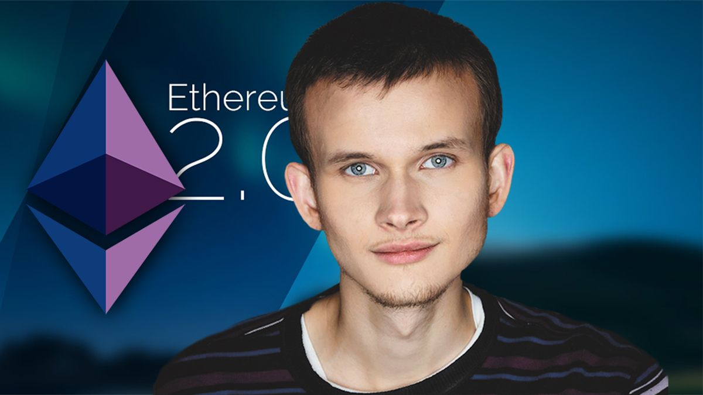

Vitalik Buterin
Programmer and writer
Co-founders of Ethereum
-
Born: 31 January 1994
-
Nationality: Russian-Canadian
More on the fascinating programmer and writer Vitalik here : Wikipedia entry.
Biography
-
1994
born on 31 January 1994 in "Kolomna, Russia" He lived in Russia until the age of six and then his parents decided to immigrate to Canada to search for better employment opportunities.
-
2011
While looking for a new direction in life, Vitalik came across Bitcoin in 2011. He was initially suspicious, and he couldn't see how it could have any value if it didn't have any physical backing. But as time went on, he learned more and became fascinated. He wanted to formally join this new and experimental economy by getting his hands on some tokens, but he had neither the computing power to mine them nor the cash to purchase Bitcoin. So, he looked for work in Bitcoin on various forums and eventually began writing articles for a blog, earning him around five Bitcoin per article. At the same time, he looked into all the different economic, technological and political aspects of cryptocurrency. His articles attracted Mihai Alisie, a Romanian-based Bitcoin enthusiast, leading to the co-founding Bitcoin Magazine in late 2011. He was writing, traveling and working on crypto for over 30 hours a day and hence, he decided to quit university. He traveled across the world looking at various crypto projects and eventually determined that they were too focused on specific uses and not broad enough. After looking at the protocols those projects were using, Vitalik realized that it's possible to massively generalize what the protocols were doing by replacing all their functionality with a Turing-complete programming language. In computer science, a Turing-complete programming language enables a computer to solve any particular problem, given the appropriate algorithm and necessary amounts of time and memory. After being refused by the existing projects, he decided to do it himself — thus the birth of Ethereum.
-
2013
In late 2013, Vitalik Buterin described his idea in a white paper, which he sent out to a few of his friends who shared it even more. As a result, about 30 people reached out to Vitalik to discuss the concept. Initially, the idea behind Ethereum was still very much about digital currency. Over time, the vision changed
-
2014
by the end of January 2014, the team had realized that it is relatively easy to create decentralized file storage, and concepts like name registry can be brought to life with just a couple of lines of code. The project was publicly announced in January 2014, with the core team consisting of Vitalik Buterin, Mihai Alise, Anthony Di Iorio, Charles Hoskinson, Joe Lubin and Gavin Wood. Buterin also presented Ethereum on stage at a Bitcoin conference in Miami. A few months later, the team decided to hold an initial coin offering (ICO) of Ether, the native token of the Ethereum network, to fund the development. Around the same time, Vitalik himself received the Thiel Fellowship grant of $100,000. The team raised more than 31,000 BTC from the sale of ETH, around $18 million at the time. The Ethereum team established the Ethereum Foundation, a non-profit organization based in Switzerland, which was tasked with overseeing Ethereum's open-source software development. Despite some turbulence, Ethereum's crowdfunding campaign turned out to be successful. Overall, Ethereum's design is meant to adhere to several principles including simplicity, universality, modularity, agility, non-discrimination and non-censorship.